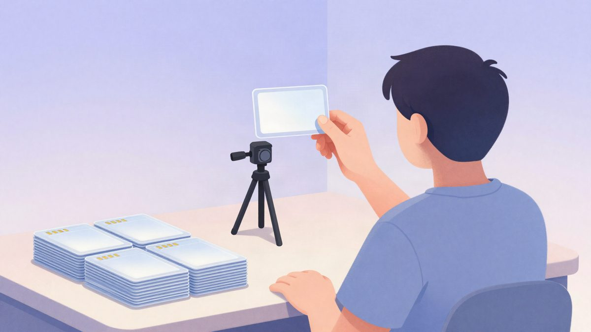
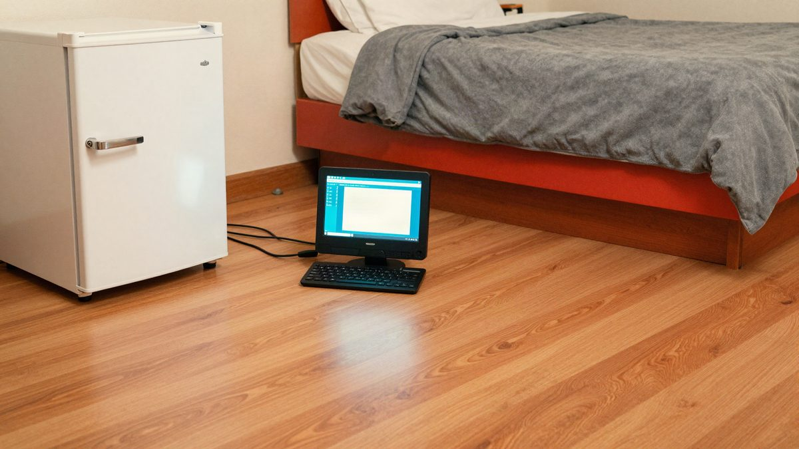

Kina: za 25 eura "lažnog posla" dvadesetogodišnjak ostao bez identiteta, na njegovo ime otvoreno 20 SIM kartica

Kineska državna televizija CCTV upozorila je na novu prijevaru s honorarnim poslovima, u kojoj kandidati za posao sami skeniraju lice i predaju osobnu iskaznicu. Dvadesetogodišnjak je tako zaradio oko 25 eura, a potom otkrio da je na njegovo ime registrirano više od 20 SIM kartica i nekoliko tvrtki.
CCTV je 4. studenoga upozorio na novu vrstu prijevare s honorarnim poslovima, u kojoj žrtve same predaju osobne podatke, uključujući biometrijske. Kao primjer naveo je dvadesetogodišnjaka kojeg zovu Xiaozhang.
Xiaozhang je u lokalnoj WeChat grupi za honorarne poslove vidio oglas u kojem su tražili ljude koji će povećati gledanost live streama i glumiti obožavatelje internetske zvijezde. Nisu bili potrebni iskustvo ni kvalifikacije, a plaća je išla isti dan.
Na dogovorenoj lokaciji djelatnici su mu rekli da treba pomoći pri registraciji korisnika za jednu aplikaciju. Zatražili su njegovu osobnu iskaznicu i proveli ga kroz prepoznavanje lica. Odmah nakon toga dobio je obećanih 200 yuana (oko 25 eura).
Kad se vratio kući, počele su mu stizati brojne reklamne i uznemirujuće SMS poruke. Provjerom je otkrio da je na njegovo ime registrirano više od 20 SIM kartica. Njegov identitet iskorišten je i za upis kao pravnog zastupnika nekoliko tvrtki, a jedna od njih izdavala je račune s PDV-om i nije plaćala porez. Xiaozhang se obratio policiji.
Zašto žrtve ne posumnjaju
Stručnjaci kažu da se ovakvi slučajevi razlikuju od klasičnog neovlaštenog prikupljanja osobnih podataka jer su skriveniji i uvjerljiviji. Počinitelji računaju na to da ljudi brzo traže zaradu, pa posao predstavljaju kao jednostavan, uz fraze poput "samo sjedi malo i slikaj se" ili "radiš danas, plaćeno danas".
Žrtve same dolaze u prostor, predaju iskaznicu i surađuju pri prepoznavanju lica. Na zahtjev osoblja trepću, kimaju i odmahuju glavom pred kamerom. Cijelo vrijeme misle da obavljaju običnu prijavu na posao, a ne znaju da se njihovi podaci možda nezakonito prikupljaju i koriste.
CCTV upozorava da se iza takvih poslova može kriti lanac preprodaje osobnih podataka i otvaranja usluga na tuđe ime.
Savjeti pravnika
Pravnici koje CCTV citira ističu da redovni poslodavci obično ne traže provjeru lica preko nepoznatih aplikacija ili linkova. Ako je provjera identiteta potrebna, moraju jasno objasniti svrhu, namjenu podataka i postupak.
Oprez se preporučuje kad se izvornik osobne iskaznice dugo zadržava, kad se traži registracija na nepoznatoj platformi ili kad se od kandidata više puta traži prepoznavanje lica. Prije prihvaćanja posla treba provjeriti tko je poslodavac i čemu će služiti podaci. Iskaznicu ne treba davati zbog male naknade.
Ako se posumnja na zlouporabu identiteta, treba sačuvati dokaze i odmah prijaviti slučaj policiji.
Izvor: MyDrivers (快科技)
Povezani članci
 Kineski vozač umotao ETC uređaj u aluminijsku foliju i 138 puta izbjegao naplatu cestarine, dobio uvjetnu kaznu4. studenoga 2026.
Kineski vozač umotao ETC uređaj u aluminijsku foliju i 138 puta izbjegao naplatu cestarine, dobio uvjetnu kaznu4. studenoga 2026. Kurir JD.com u Hangzhouu spriječio prijevaru: umirovljenica trebala platiti oko 2.600 eura za "čudotvorni lijek"4. studenoga 2026.
Kurir JD.com u Hangzhouu spriječio prijevaru: umirovljenica trebala platiti oko 2.600 eura za "čudotvorni lijek"4. studenoga 2026.
Kineski par slao je 480.000 phishing mailova s računala skrivenog iza hladnjaka u japanskom hotelu22. listopada 2026.